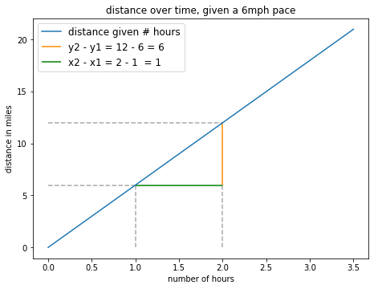
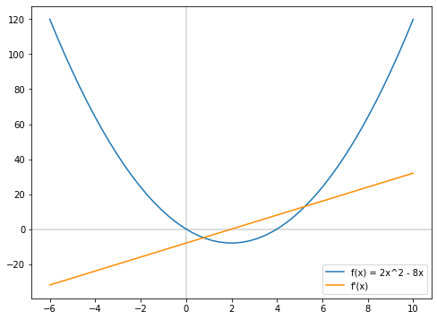
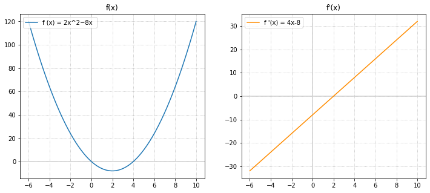
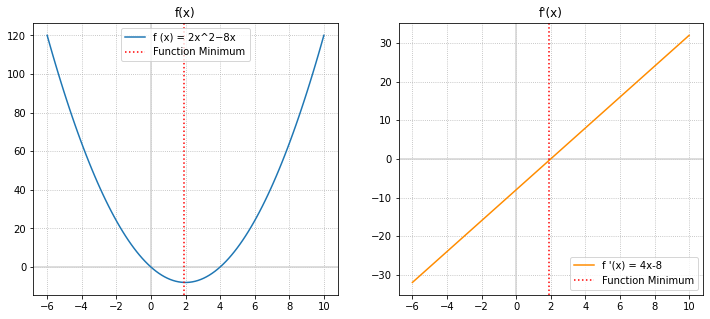
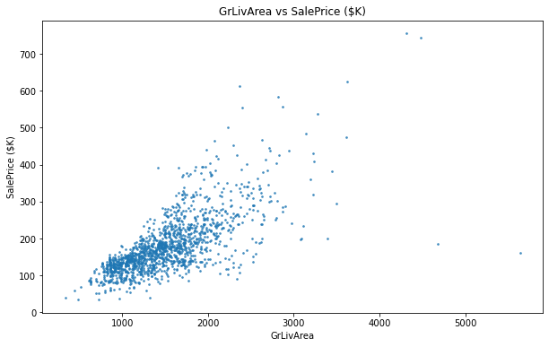
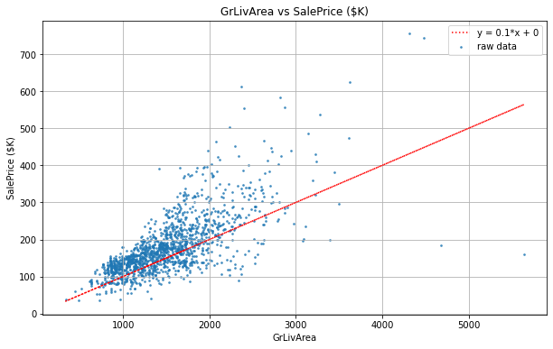
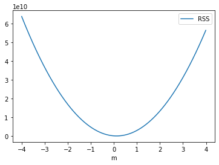
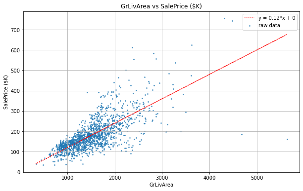

Topic 23: Cost Functions and Gradient Descent#
onl01-dtsc-ft-022221
04/30/21
Learning Objectives#
Learn about derivatives and their rules, and how we can use derivatives to find minima/maxima
Discuss cost functions and how they work/are used (examples from Linear Regression)
Learn what gradient descent is and what step sizes are
Activity: Gradient Descent: Step Sizes Lab
Define what a gradient really is in multiple dimensions
Demonstrate Gradient Descent using a Linear Regression model with Residual Sum of Squares
Activity: Applying Gradient Descent Lab
Questions?#
Step Sizes Lab
Can you talk about why we use gradient descent to approach a minimum as opposed to just setting the derivative to 0 to find the exact minimum?
# Required imports
import numpy as np
import pandas as pd
import matplotlib.pyplot as plt
import seaborn as sns
Intro to Derivatives#
Slope is rate the change for line –> rate is constant
For any two points:

# Plot change x,y as lines for x=1 to x=2
def jog(hours):
'''
Given some amount of time, in hours, how many miles will we run?
Assumes our pace is 6 mph
Input: hours (time in hours)
Output: number of miles
'''
return 6*hours
x1 = 1 # Input at 1 hour
y1 = jog(x1) # Output at 1 hour
x2 = 2 # Input at 2 hours
y2 = jog(x2) # Output at 2 hours
# And now, plot
fig_jog, ax = plt.subplots(figsize=(7.5, 5.5))
# Providing inputs to plot between x=0 and x=3.5
x = np.linspace(0, 3.5)
# Plotting our function, f(x) = 6x, between 0 and 3.5 hours
ax.plot(x, jog(x), label="distance given # hours")
# Defining keyword arguments for our dashed lines
line_kws = dict(linestyle="dashed", color='darkgray')
# Creating our dashed lines
ax.hlines(y=y1, xmin=0, xmax=x1, **line_kws)
ax.vlines(x=x1, ymin=0, ymax=y1, **line_kws)
ax.hlines(y=y2, xmin=0, xmax=x2, **line_kws)
ax.vlines(x=x2, ymin=0, ymax=y1, **line_kws)
# Creating our "rise" portion
ax.vlines(x=x2, ymin=y1, ymax=y2, color="darkorange",
label=f"y2 - y1 = {y2} - {y1} = {y2-y1}")
# Creating our "run" portion
ax.hlines(y=y1, xmin=x1, xmax=x2, color="green",
label=f"x2 - x1 = {x2} - {x1} = {x2-x1}")
ax.legend(loc='upper left', fontsize='large')
ax.set_ylabel("distance in miles")
ax.set_xlabel("number of hours")
plt.title("distance over time, given a 6mph pace")
plt.show()

The slop can be represented as a derivative:
Non-Linear Functions Complicate Things#
# plotting something a bit more complicated...
fig_nonlinear = plt.figure(figsize=(8,6))
# Providing inputs to plot between x=-6 and x=10
x_values = np.linspace(-6, 10)
# Defining our y values with list comprehension
function_values = [2*x**2-8*x for x in x_values]
# Plotting our axes at x=0 and y=0
plt.axhline(y=0, color='lightgrey', )
plt.axvline(x=0, color='lightgrey')
# The plot!
plt.plot(x_values, function_values, label = "f(x) = 2x^2 - 8x")
deriv_values = [4*x-8 for x in x_values]
plt.plot(x_values, deriv_values, label = "f'(x)", color="darkorange")
plt.legend()
plt.show()
# fig_nonlinear = plt.gcf()

The curve changes too quickly for our prior approach to capture the true rate of change
The solution is to to decrease \(\Delta x\) to nearly 0#
“Instantaneous rate of change”
Rules of Derivatives#
Power Rule#
If f(x) is: $\(f(x) = x^r \)$
Then, the derivative is: $\( f'(x) = r*x^{r-1} \)$
Move the exponent (r) to in front of
xwhere it becomes a coefficient of xReplace the original exponent
rwithr-1
Constant Factor Rule#
If a variable is multiplied by a constant (i.e. a number), then to take the derivative of that term, apply power rule and multiply the variable by that same constant.
So given the function:
Addition Terms & Coefficients#
To take a derivative of a function that has multiple terms, simply take the derivative of each of the terms individually. So for the function above,
Q: What’s the derivative for this function, given that the function is \(f(x) = 6x\) ?#
fig_jog
A: 6
Q: What’s the derivative for this function, given that the function is \(f(x) = 2x^2 - 8x\) ?#
fig_nonlinear
A: \(f'(x) = 4x^1 - 8x^0 = 4x-8\)
Using Derivatives to Find the Minimum of Function#
from derivatives import *
Representing \(f(x) = 2x^2 - 8x\) with matrices
## [coeff, exp]
tuple_sq_pos = np.array([[2, 2], [-8, 1]])
x_values = np.linspace(-6, 10, 100)
## calculate output and derivatives
function_values = [output_at(tuple_sq_pos, x) for x in x_values]
derivative_values = [derivative_at(tuple_sq_pos, x) for x in x_values]
import matplotlib.pyplot as plt
%matplotlib inline
fig, axes = plt.subplots(figsize=(12,5),ncols=2)
# plot 1
ax = axes[0]
ax.axhline(y=0, color='lightgrey', )
ax.axvline(x=0, color='lightgrey')
ax.plot(x_values, function_values, label = "f (x) = 2x^2−8x ")
ax.set_title('f(x)')
ax.legend(loc="upper left",
bbox_to_anchor=[0, 1],
ncol=2, fancybox=True)
# plot 2
ax = axes[1]
ax.axhline(y=0, color='lightgrey')
ax.axvline(x=0, color='lightgrey')
ax.plot(x_values, derivative_values,color="darkorange", label = "f '(x) = 4x-8")
ax.set_title("f'(x)")
[ax.grid(True, which='both',ls=':') for ax in axes]
ax.legend(loc="upper left");

## making series for convience
func_values_series = pd.Series(function_values,index=x_values)#.min()
deriv_values_series = pd.Series(derivative_values,index=x_values)
(ax1,ax2) = axes
ax1.axvline(func_values_series.idxmin(),
ls=':',c='red',label='Function Minimum')
ax2.axvline(func_values_series.idxmin(),
ls=':',c='red',label='Function Minimum')
[a.legend() for a in [ax1,ax2]]
fig

The minimum of a function has an instanteous rate of change = 0
Therefore the value of x that produces a derivative=0 is the minimum of a function
So how can we use this fact in Machine Learning?
We can use the derivatives of our cost functions for our models to determine what parameters would be best for your model/
This is fundamental concept behind gradient descent (which will discuss in-depth next study group), using derivatives with cost/loss functions to find the best values with the lowest error.

Cost Functions#
A cost function is a function that calculates the error of our models predictions vs ground truth. - “Cost function” = “Loss function” = “Error”
Multiple notations/names:
Loss Function: \(L(y,t)\)
Cost Function: \(C(y,t)\)
Error: \(E(y,t)\)
Cost Functions You’ve Already Seen#
Error terms we used for linear regression back in Module 1 included Mean Squared Error and Root Mean Squared Error
Residual Sum of Squares#
\( \large RSS = \sum_{i=1}^n(actual - expected)^2 = \sum_{i=1}^n(y_i - \hat{y})^2 \)
Mean Squared Error#
\( \large MSE = \frac{1}{n}\sum_{i=1}^{n}(y_{i} - \hat y_{i})^2\)
Note that MSE is just RSS divided by the number of data points. So its the mean of the residual sum of squares (AKA squared error)
Root Mean Squared Error#
\( \large RMSE = \sqrt{\frac{1}{n}\sum_{i=1}^{n}(y_{i} - \hat y_{i})^2}\)
Note that RMSE is just the square root of MSE.
Intro to Gradient Descent Using Linear Regression#
Linear Regression Example#
import pandas as pd
## Kaggle Dataset https://www.kaggle.com/c/house-prices-advanced-regression-techniques/data
url = "https://raw.githubusercontent.com/jirvingphd/fsds_100719_cohort_notes/master/datasets/house-prices-advanced-regression-techniques/train.csv"
df = pd.read_csv(url)
df.head()
| Id | MSSubClass | MSZoning | LotFrontage | LotArea | Street | Alley | LotShape | LandContour | Utilities | ... | PoolArea | PoolQC | Fence | MiscFeature | MiscVal | MoSold | YrSold | SaleType | SaleCondition | SalePrice | |
|---|---|---|---|---|---|---|---|---|---|---|---|---|---|---|---|---|---|---|---|---|---|
| 0 | 1 | 60 | RL | 65.0 | 8450 | Pave | NaN | Reg | Lvl | AllPub | ... | 0 | NaN | NaN | NaN | 0 | 2 | 2008 | WD | Normal | 208500 |
| 1 | 2 | 20 | RL | 80.0 | 9600 | Pave | NaN | Reg | Lvl | AllPub | ... | 0 | NaN | NaN | NaN | 0 | 5 | 2007 | WD | Normal | 181500 |
| 2 | 3 | 60 | RL | 68.0 | 11250 | Pave | NaN | IR1 | Lvl | AllPub | ... | 0 | NaN | NaN | NaN | 0 | 9 | 2008 | WD | Normal | 223500 |
| 3 | 4 | 70 | RL | 60.0 | 9550 | Pave | NaN | IR1 | Lvl | AllPub | ... | 0 | NaN | NaN | NaN | 0 | 2 | 2006 | WD | Abnorml | 140000 |
| 4 | 5 | 60 | RL | 84.0 | 14260 | Pave | NaN | IR1 | Lvl | AllPub | ... | 0 | NaN | NaN | NaN | 0 | 12 | 2008 | WD | Normal | 250000 |
5 rows × 81 columns
## convert target to $1000 of dollars
df['SalePrice ($K)']=df['SalePrice']/1000
X = df['GrLivArea'].copy()
y = df['SalePrice ($K)'].copy()
fig, ax = plt.subplots(figsize=(10,6))
ax.scatter(X, y, s=3,
alpha=0.7, label="raw data")
ax.set(title=f"{X.name} vs {y.name}",
ylabel=y.name,
xlabel=X.name);

Activity: Let’s Attempt to Guess Our Best-Fit Regression Line#
in Linear Regression, we predict \(y\) using 2 parameters, m (slope) + b(intercept/constant):
where:
\(x\) = input data for modeling
\(y\) = model predictions
\(m\) = slope
\(b\) = intercept
Since our regression equation is our model, \(y\) is really our model’s prediction, which we represent as \(\hat{y}\)
def scatter_plot(X,y):
"""Plots 2 pandas Series."""
fig, ax = plt.subplots(figsize=(10,6))
ax.scatter(X, y, s=3,
alpha=0.7, label="raw data")
ax.set(title=f"{X.name} vs {y.name}",
ylabel=y.name,
xlabel=X.name);
ax.grid()
return fig,ax
fig,ax = scatter_plot(X,y)
def regression_model(x,m,b):
return m*x + b
def regression_formula(m,b):
formula = f"y = {round(m,2)}*x + {round(b,2)}"
return formula
Pick an initial starting value for the slope and intercept (take a guess as to what they may be from examining the figure)#
## guess slope:
slope = 100/1000
## guess intercept:
intercept = 0
## Get Predictions from model
y_pred = regression_model(X,slope,intercept)
## Plot Raw Data
fig,ax = scatter_plot(X,y)
## Plot Predicted Values
ax.plot(X,y_pred,c='red',ls=':', label = regression_formula(slope,intercept))
ax.legend()
<matplotlib.legend.Legend at 0x7fb3e5d7b4f0>

Let’s Calculate our Models’ Erorr/Cost using RSS#
import math
from sklearn.metrics import r2_score#,mean_squared_error
def errors(x_values, y_values, m, b):
"""(y_i - y_hat_i)"""
y_line = regression_model(x_values,m,b)#(b + m*x_values)
return (y_values - y_line)
def squared_errors(x_values, y_values, m, b):
"""(y_i - y_hat_i)**2"""
err_squared = errors(x_values, y_values, m, b)**2
return np.round(err_squared, 2)
def residual_sum_squares(x_values, y_values, m, b):
"""sum((y_i - y_hat_i)**2)"""
rss =sum(squared_errors(x_values, y_values, m, b))
return round(rss, 2)
def root_mean_squared_error(x_values, y_values, m, b):
rmse = math.sqrt(sum(squared_errors(x_values, y_values, m, b)))/len(x_values)
return round(rmse, 2)
residual_sum_squares(X,y,slope,intercept)
5864459.31
## Make a dictionary to collect results
res = {}
## Calculate RSS
res['RSS'] = residual_sum_squares(X,y,slope, intercept)
## Calculate RMSE
res['RMSE'] = root_mean_squared_error(X,y,slope, intercept)
## Calculate R2
y_pred = regression_model(X,slope, intercept)
res['R2'] = np.round(r2_score(y,y_pred),2)
## Print Results
[print(f"{k}: {v}") for k,v in res.items() ] ;
RSS: 5864459.31
RMSE: 1.66
R2: 0.36
## Combine into function
def evaluate_model(X,y,slope,intercept,show=True, plot=False):
## Make a dictionary to collect results
res = {}
res['m'] = slope
res['intercept'] = intercept
## Calculate RSS
res['RSS'] = residual_sum_squares(X,y,slope, intercept)
## Calculate RMSE
res['RMSE'] = root_mean_squared_error(X,y,slope, intercept)
## Calculate R2
y_pred = regression_model(X,slope, intercept)
res['R2'] = np.round(r2_score(y,y_pred),2)
if show:
## Print Results
[print(f"{k}: {v}") for k,v in res.items() ] ;
## Add Optional Plot using plotting code from above
if plot:
fig,ax = scatter_plot(X,y)
## Plot Predicted Values
ax.plot(X,y_pred,c='red',ls=':', label = regression_formula(slope,intercept))
ax.legend()
return res
## Use our function below
evaluate_model(X,y,slope,intercept,plot=True);
m: 0.1
intercept: 0
RSS: 5864459.31
RMSE: 1.66
R2: 0.36
Moving towards gradient descent#
So this will be our technique for finding our “best fit” line:
Choose a regression line with a guess of values for \(m\) and \(b\)
Calculate the RSS
Adjust \(m\) and \(b\), as these are the only things that can vary in a single-variable regression line.
Again calculate the RSS
Repeat this process
The regression line (that is, the values of \(b\) and \(m\)) with the smallest RSS is our best fit line
Using Loss Function to Find the Optimal Value of \(m\)#
Let’s set a fixed value for our intercept and then lets try a list of possible \(m\) values and plot the cost curve
## Choose Intercept to Use and Delta_M
INTERCEPT = 0
delta_M = .01
## Generate a list of all slopes to try
slope_list = np.arange(-4, 4,delta_M)
slope_list.shape
(800,)
## Set up a list to append the m, RSS, and R2 results for each slope
results = []
## For loop trying all possible slopes
for slope in slope_list:
results.append(evaluate_model(X,y,slope,intercept,show=False,plot=False))
results[0]
{'m': -4.0,
'intercept': 0,
'RSS': 63699945638.09,
'RMSE': 172.87,
'R2': -6916.96}
## Turn it into a dataframe
res_df = pd.DataFrame(results)
res_df.sort_values('RSS').head()
| m | intercept | RSS | RMSE | R2 | |
|---|---|---|---|---|---|
| 412 | 0.12 | 0 | 4652172.76 | 1.48 | 0.49 |
| 411 | 0.11 | 0 | 4882720.45 | 1.51 | 0.47 |
| 413 | 0.13 | 0 | 5172815.18 | 1.56 | 0.44 |
| 410 | 0.10 | 0 | 5864459.31 | 1.66 | 0.36 |
| 414 | 0.14 | 0 | 6444648.90 | 1.74 | 0.30 |
res_df.plot(x='m',y='RSS')
<AxesSubplot:xlabel='m'>

## Save the best slope as best_m
best_m = 0.12
## Use Best Slope to get final model result using evaluate_model
evaluate_model(X,y,best_m, INTERCEPT,plot=True)
m: 0.12
intercept: 0
RSS: 4652172.76
RMSE: 1.48
R2: 0.49
{'m': 0.12, 'intercept': 0, 'RSS': 4652172.76, 'RMSE': 1.48, 'R2': 0.49}

The bottom of the blue curve displays the \(m\) value that produces the lowest RSS.
So why can’t we try every possible option all the time? Why can’t we just test out every possible value and find the value that minimizes our loss function?
Because our equations will get more complex and we will be dealing with more than 1 variable to optimize
Gradient Descent to Find Optimal Parameters - Step Size#
Above, we changed our \(m\) by the same amount each iteration.
This limits how quickly we can find the ideal value.
The solution is to adjusted our step size.
The slope of the cost curve tells us our step size#
The sign (+/-) of the slope indicates if we are approaching the minimum
If the slope tilts downwards, then we should walk forward to approach the minimum.
And if the slope tilts upwards, then we should point walk backwards to approach the minimum.
The steeper the tilt, the further away we are from our cost curve’s minimum, so we should take a larger step.
Step Size#
We cannot simply use the derivative to find the minimum. Using that approach will be impossible in many scenarios as our regression lines become more complicated.
We cannot alter all of the variables of our regression line across all points and calculate the result. It will take too much time, as we have more variables to alter.
Let’s call each of these changes a step, and the size of the change our step size.
Our new task is to find step sizes that bring us to the best RSS quickly without overshooting the mark.
True Gradient Descent doesn’t just try a fixed number of evenly spaced values.
It uses the size of the slope to indicated how much the parameter should change (the step size).
We use a parameter called the learning rate to control how rapidly we update the parameter.
Updating our slope#
We use the following procedure to find the ideal \(m\):
\(m_i\) = Updated slope value for the model.
\(m_{i-1}\) = the model’s prior slope value
LR represents the Learning Rate
A decimal between 0 and 1 (usually)
\(Cost_{m_i}\) = current slope value from cost function’s derivative.
Lesson’s Version:
”Update \(m\) with the formula \( m = (-.02) * slope_{m = i} + m_i\).”
Learning Rate#
A small learning rate requires many updates before reaching the minimum
The optimal learning rate quickly converges to the minimum point
A learning rate that is too large leads to divergent behavior: you may bounce around the minimum!

Activity: Gradient Descent Step Sizes Lab#
In Topic 23 > labs folder
Gradient Descent in 3D#
Gradient Descent with RSS as a Multivariate Equation#
Cost Function \(J\) (RSS):
we know \(\hat{y} = mx + b\), so:
Examine our cost curve once it includes both \(m\) and \(b\)

Gradient Descent in 3D will involve tuning multiple parameters simultaneously.
A 3D Gradient (\(\nabla\)) uses partial derivatives test the best direction and magnitude to adjust both \(m\) and \(b\) .
Partial Derivatives#

To measure the slope in each dimension, one after the other, we’ll take the derivative with respect to one variable, and then take the derivative with respect to another variable.
To take a derivative with respect to \(x\) means to ask, how does the output change, as we make a nudge only in the \(x\) direction.
To express that we are nudging in the \(x\) direction we say \(\frac{\delta f}{\delta x}\).
We fill in a constant for the value of y (the current value) and then take the derivative with respect to x.
To express we are nudging in the \(y\) direction, we say \(\frac{\delta f}{\delta y}\).
We fill in a constant for the value of x and then take the derivative with respect to y
Gradient Descent Upside Down: Mountain Climbing#

Here, in finding gradient ascent, our task is not to calculate the gain from a move in either the \(x\) or \(y\) direction. Instead, our task is to find some combination of a change in \(x\),\(y\) that brings the largest change in output.
Our function \(f(x,y)\) represents the movement of the climbers towards the summit.
So \(\nabla f(x, y) = \frac{\delta f}{\delta y}, \frac{\delta f}{\delta x} \).
Gradient Descent with Linear Regression#
Equation for Calculating RSS Partial Derivatives#
As we know, the gradient of a function is simply the partial derivatives with respect to each of the variables, so:
Update Rule:#
The equations for the partial derivatives of our RSS function with respect to m and b are:
Our update rules for m and b become:
current_m=old_m\( - (-2*\sum_{i=1}^n x_i*\epsilon_i )\)current_b=old_b\( - ( -2*\sum_{i=1}^n \epsilon_i )\)
Note: Source of these Equations#
These formulas are derived in one of the Appendix lessons for this section that applies the Chain Rule (also an appendix lesson)
Appendix Lesson: The Chain Rule(https://learning.flatironschool.com/courses/2682/assignments/96080?module_item_id=195973)
Appendix Lesson: Gradient to Cost Function(https://learning.flatironschool.com/courses/2682/pages/gradient-to-cost-function-appendix?module_item_id=195974)
The chain rule says that we can represent complex equations as multiple equations, and then we can take the derivative of outer and inner equations separately.
\[ \large F(x) = f(g(x)) \]\[ \large F'(x) = f'(g(x))*g'(x) \]
Applied to our Cost Function:
“In calculating the partial derivatives of our function \(J(m, b) = \sum_{i=1}^{n}(y_i - (mx_i + b))^2\), we won’t change the result if we ignore the summation until the very end.”
Activity: Apply Gradient Descent Lab#
Topic 23 Folder > labs
Summary#
Today we:
Discussed how we can use derivatives to find the best parameter to minimize a cost function.
Discussed how to extend this to more than one parameter using Partial Derivatives and gradient descent.
We walked through how we would calculate the \(\beta\)s for a Linear Regression model
APPENDIX#
Practicing Derivatives#
Q: Find the derivative of each function#
\( \large f(x) = 5x^6\)
\(f'(x) = ?\)
\(\large g(x) = 30x\)
\(g'(x)=?\)
\(\large z(x) = 42 \)
\(z'(x) = ? \)
A:#
\( f(x) = 5x^6\)
\(\large f'(x) = 30x^5\)
\( g(x) = 30x\)
\(\large g'(x)= 30\)
\( z(x) = 42 \)
\( z(x) = 42 * (x^0) \)
\( \large z'(x) = 0*42x^{0-1} = 0 \)
For a linear function:
Partial Derivatives#
To measure the slope in each dimension, one after the other, we’ll take the derivative with respect to one variable, and then take the derivative with respect to another variable.
To take a derivative with respect to \(x\) means to ask, how does the output change, as we make a nudge only in the \(x\) direction.
To express that we are nudging in the \(x\) direction we say \(\frac{\delta f}{\delta x}\).
We fill in a constant for the value of y (the current value) and then take the derivative with respect to x.
To express we are nudging in the \(y\) direction, we say \(\frac{\delta f}{\delta y}\).
We fill in a constant for the value of x and then take the derivative with respect to y
So what does a derivative \(\frac{\delta f}{\delta x}\) look like? How do we think of a partial derivative of a multivariable function?
Well, remember how we think of a standard derivative of a one variable function, for example \(f(x) = x^2 \).
\(\frac{df}{dy}f(x, y)\) where \(f(x,y) = (yx^2) \).
Gradient Descent Notation#
Generalized Gradient Descent Math Notation#
In the below equations:
x and x_i represent whatever paramater is being tested and updated.
Multi-dimensional version of a derivative $\(-\nabla = \sum_i \dfrac{\partial}{\partial x_i}\)$
When minimum is reached, \( \eta *f'(x_i) \) becomes 0. $\( x_{i+1} = x_i - 0 \)$